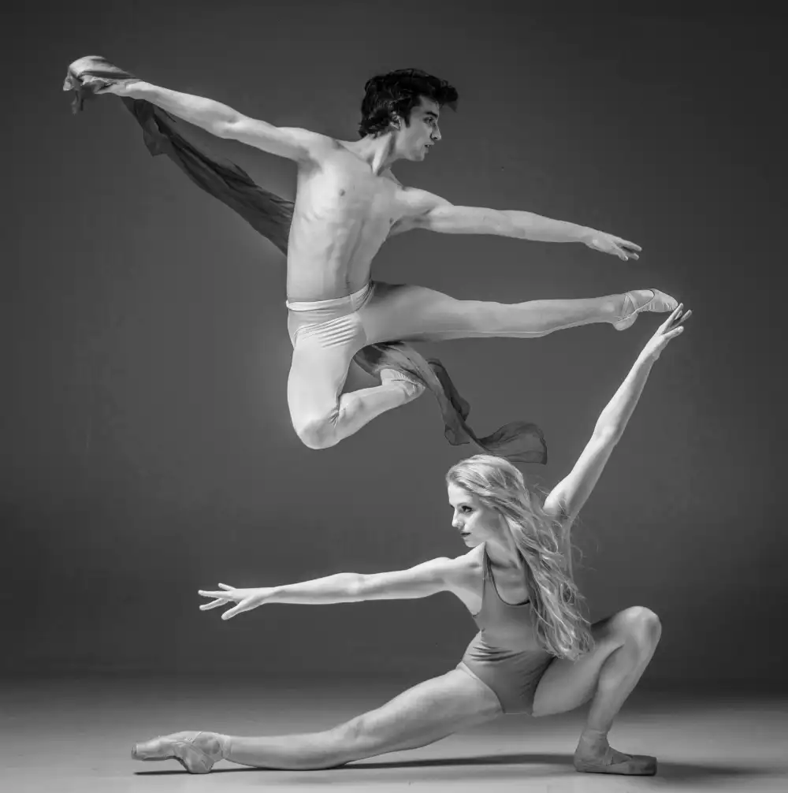

文章列表

左手按弦，右手拉弦，耳朵聽著聲音，眼睛看著觀眾，腦中想著樂譜，音樂人總是多頭同時進行，雖然一直在練習分心，但混亂總是存在。這是一份複雜的工作，許多演奏者都有經驗，常常發生預期之外的錯誤，如果覺得困擾，可以試試這個一致性的辦法。
一致性是加上濾鏡的做法，選擇處理最重要的事，讓大多數工作都自動化，來減輕多工的負擔。舉例來說，如果左右手的工作已經熟悉，就放任它們自己運行，樂譜已經背熟，就不需要去想，看到觀眾，就默認他們的支持。心中只想的是，下一句要怎麼表達。
一致性很常發生，其實很多人都有經驗。比方說，誰沒有過在練琴的時候一邊追劇呢？看著電視卻可以背譜就是一種自動化的狀態。或者，看著譜的時候，手指會不會跟著動？那時你的手也是自動化的狀態。
把一致性延伸運用就可以減輕負擔，因為它解放了大腦處理瑣事的需求，可以更自在的完成複雜的工作。
回上一頁